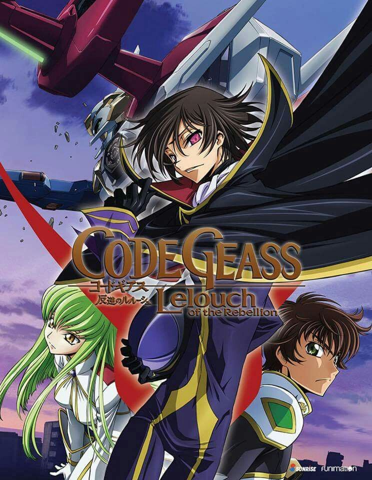
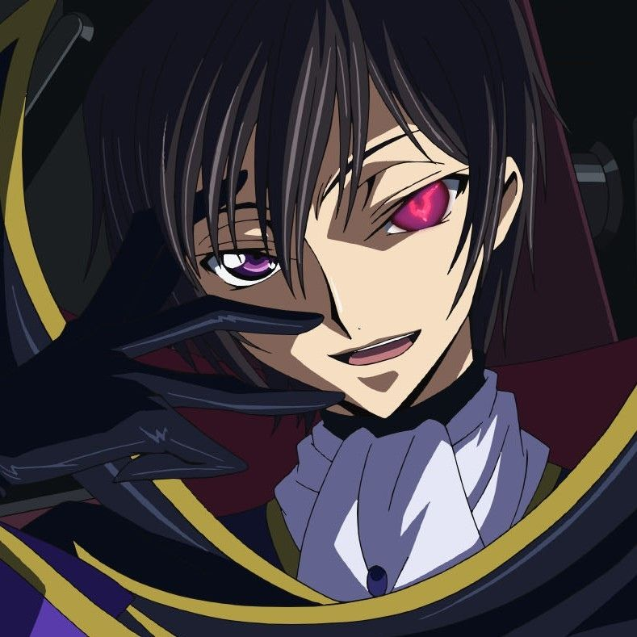
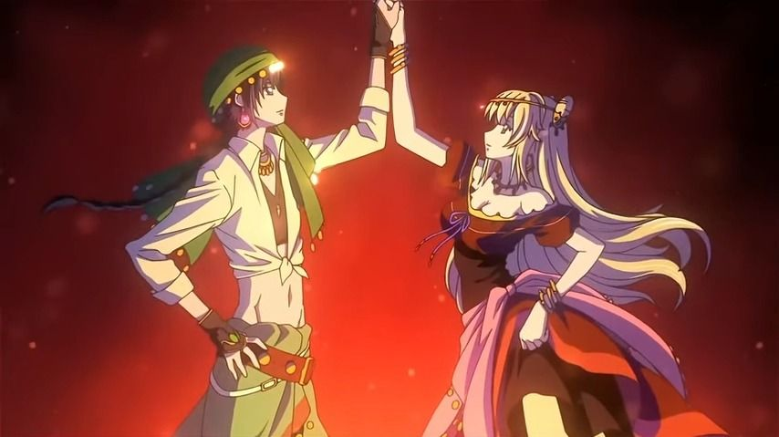
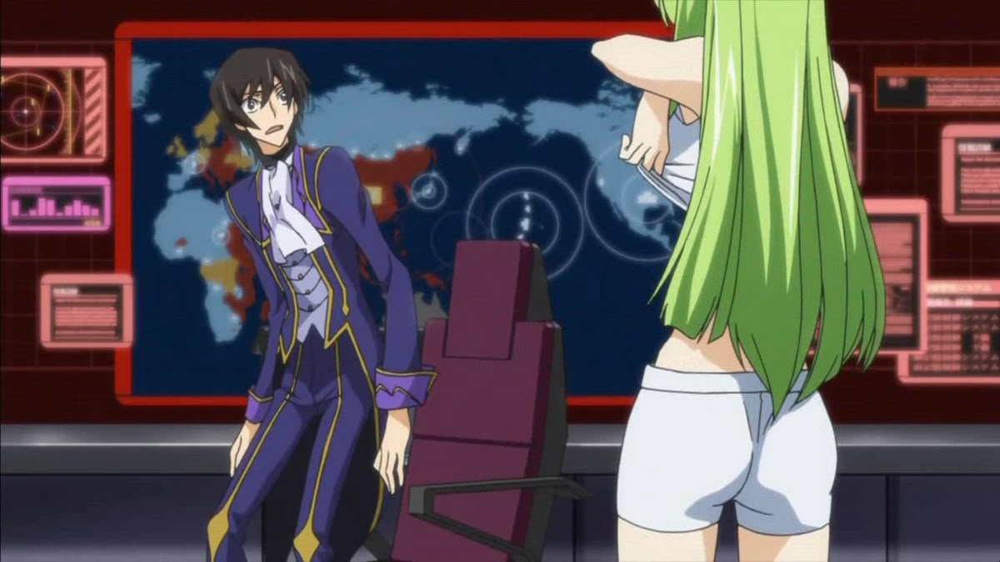
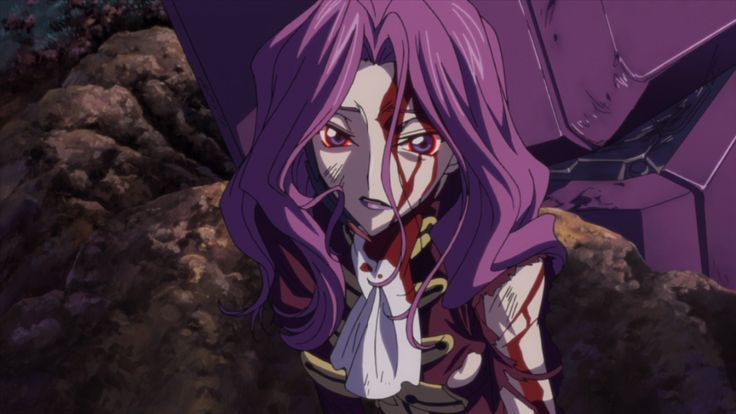

Code Geass: Lelouch of the Rebellion
Меха
Драма
Психология
Сюжет
После захвата Японии Британией, изгнанный принц Лелуш получает силу Гиас — способность подчинять других. Он решает использовать её, чтобы разрушить империю изнутри и отомстить за свою семью.
Почему стоит посмотреть
- Один из лучших стратегических сюжетов в истории аниме.
- Главный герой — смесь гения, идеалиста и антигероя.
- Непредсказуемые повороты и идеальный финал.
Кадры из сериала



